(GS)

(GS)
(GS)
(GS)
(GS)
(GS)
1. For a given size rectangle, what is the largest amount of wasted space possible?
2. Restricting the rectangles to squares, what is the largest amount of wasted space possible?
3. Fixing the width of the rectangles, what is the largest proportion of wasted space possible?
1.
Here are the rigid packings of rectangles with the largest known wasted space.
| m \ n | 2 | 3 | 4 | 5 | 6 | 7 | 8 | 9 | 10 | 11 | 12 | 13 | 14 | 15 |
|---|---|---|---|---|---|---|---|---|---|---|---|---|---|---|
| 4 | ||||||||||||||
| 5 | ||||||||||||||
| 6 | ||||||||||||||
| 7 | | 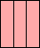 | ||||||||||||
| 8 | 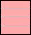 | 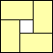 | ||||||||||||
| 9 | 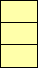 | 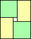 | 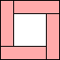 | |||||||||||
| 10 | 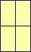 | 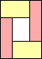 |
| 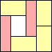 | ||||||||||
| 11 | 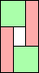 | 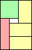 | 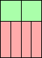 | 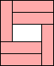 | 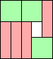 | 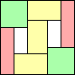 | ||||||||
| 12 | 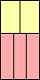 | 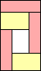 | 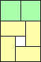 | 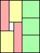 | 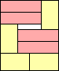 | 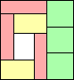 | 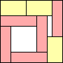 | |||||||
| 13 | 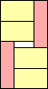 | 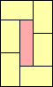 |
| 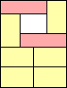 | 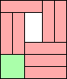 | 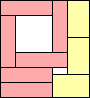 | 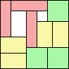 | |||||||
| 14 | 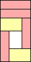 | 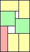 | 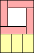 | 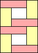 | 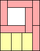 | 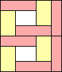 | 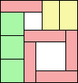 (GS) | 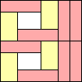 | ||||||
| 15 | | 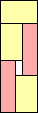 | 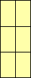 | 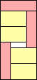 | 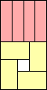 | 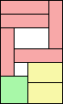 (GS) | 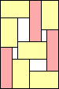 | 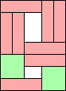 | 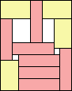 (GS) | 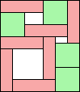 (GS) | 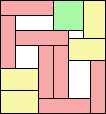 (GS) | 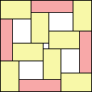 (GS) |
Jeremy Galvagni noted that there are rigid rectangles with tilted rectangles. For example, a 2×7 brick can be tiled at an angle arctan(2/7) < θ < arctan(7/2) with wasted space 53sinθcosθ.
Here are the rigid packings of squares with the largest known wasted space.
| 4 wasted=0 | 8 wasted=4 | 9 wasted=25 | 10 wasted=12 | 11 wasted=16 | 12 wasted=29 | 13 wasted=19 | 14 wasted=24 | 15 wasted=49 (GS) |
| 16 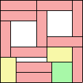 wasted=56 (GS) | 17 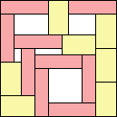 wasted=58 (GS) | 18 wasted=100 | 19 wasted=74 (GS) | 20 wasted=90 (GS) |
Here are the limited cases of rectangles with a given width with the largest known proportion of wasted space.
| 2 0/14 | 3 0/15 | 4 0/16 | 5 9/95 =.094+ | 6 10/54 =.185+ | 7 33/119 =.277+ | 8 26/160 =.162+ | 9 30/72 =.416+ | 10 16/60 =.266+ | 11 30/88 =.340+ | 12 30/96 =.312+ | 13 30/104 =.288+ | 14 66/238 =.277+ |
If you can extend any of these results, please e-mail me. Click here to go back to Math Magic. Last updated 1/1/14.